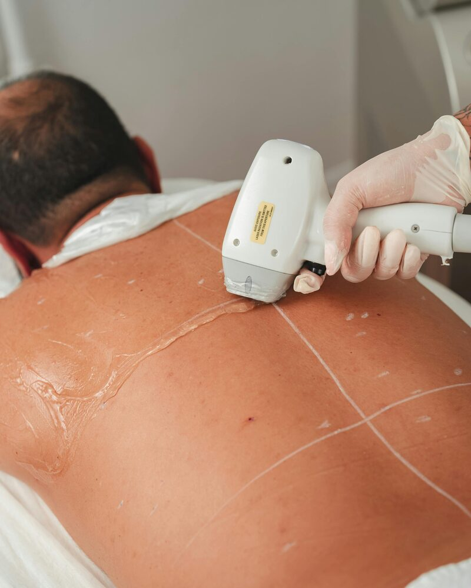

Long-Lasting Results
Laser Hair Reduction in Salt Lake City, UT
Stop shaving. Stop waxing. Laser hair reduction delivers long-lasting smoothness — with a treatment plan built around your skin tone, hair type, and goals.
Why Laser Hair Reduction?
Shaving irritates. Waxing hurts. Threading is precise but temporary. Laser hair reduction is the only method that targets the follicle itself — dramatically reducing regrowth with each session, and for many clients, eliminating it in treated areas entirely.
At Rocky Mountain Skin, treatments are done with a licensed Master Esthetician who tailors each session to your skin tone, hair color, and the specific area being treated. We use professional-grade technology and follow strict safety protocols — because laser is a results-driven treatment that demands precision.
This is also a space where you can be comfortable. If you're trans, non-binary, or navigating body hair changes related to HRT or gender affirmation — we get it, and we've got you.

Treatment Areas
Where We Treat
Laser hair reduction can be performed on virtually any area of the body. Common treatment areas include:
- ✦Face & upper lip
- ✦Chin & neck
- ✦Underarms
- ✦Arms & hands
- ✦Chest & abdomen
- ✦Back & shoulders
- ✦Bikini & Brazilian
- ✦Inner thighs
- ✦Full legs
- ✦Feet & toes
Not sure if your area is treatable? Ask during your consultation — we'll give you a straight answer.
Good to Know
- ✦Most clients need 6–8 sessions for full reduction
- ✦Sessions spaced 4–8 weeks apart
- ✦Works best on darker hair / lighter skin — but we treat all tones
- ✦Avoid sun exposure before and after treatment
- ✦Shave — don't wax or thread — before your appointment
What to Expect
Your Laser Hair Reduction Treatment
Consultation First
Every laser client starts with a consultation. We review your skin tone, hair type, medical history, and any medications or topical products that could affect treatment safety. This is where we design your treatment plan — including which areas, how many sessions, and what spacing makes sense for your goals.
Prep Before Your Session
In the days before treatment, shave the area (don't wax, pluck, or thread — the follicle needs to be intact). Avoid sun exposure and tanning products for at least two weeks prior. Come in with clean, product-free skin.
During Treatment
You'll wear protective eyewear. A cooling gel is applied to the treatment area, and the laser handpiece is moved systematically across the skin. Most clients describe the sensation as a warm snap — similar to a rubber band. Smaller areas like the upper lip take just a few minutes; larger areas like full legs take longer.
After Your Session
Some redness and minor swelling is normal and typically resolves within a few hours. Avoid heat (saunas, hot showers, intense workouts) for 24–48 hours. SPF is non-negotiable — treated skin is more photosensitive. Hair will shed over the following 1–3 weeks, not fall out immediately.
Ongoing Sessions
Hair grows in cycles. Laser only targets follicles in the active growth phase — which is why multiple sessions are required. We'll track your progress and adjust settings as your hair reduces over time. Most clients see 60–80% permanent reduction after completing a full series.
Inclusivity Matters
Laser Hair Reduction for Trans & Gender-Diverse Clients
Rocky Mountain Skin is a queer-affirming, gender-affirming studio. Laser hair reduction can be an important part of gender affirmation — whether you're reducing facial hair, addressing body hair, or working with the changes HRT is creating in your body.
You don't have to explain yourself here. Just tell us your goals and we'll build a plan around them. All pronouns welcomed, all bodies treated with care and respect.
Is It Right for You?
Contraindications & Considerations
Laser hair reduction is safe for most clients, but there are some conditions and factors that require discussion before we proceed:
- Active tan, recent sun exposure, or self-tanner in the treatment area
- Certain medications (especially photosensitizing drugs like Accutane, some antibiotics, retinoids)
- Active skin infections, open wounds, or inflammatory conditions in the treatment area
- Pregnancy
- History of keloid scarring in the treatment area
- Very light blonde, gray, red, or white hair (laser targets melanin — low-pigment hair responds less predictably)
This is exactly why we do consultations. We'll go through your full history and be upfront about what to expect — including if we think laser isn't the right tool for your situation.
Start Your Journey
Book a Laser Hair Reduction Consultation in Salt Lake City
Rocky Mountain Skin is located in South Salt Lake, UT. Queer-affirming, body-positive, and results-focused. Your first step is a consultation — we'll build the plan from there.